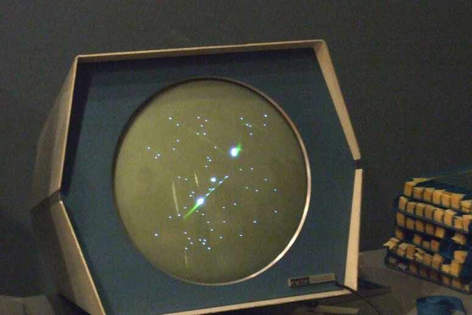
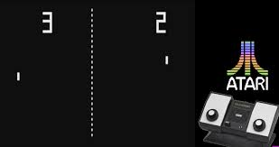

I videogiochi sono nati come semplici esperimenti tecnologici e scientifici. Uno dei primi esempi conosciuti è Tennis for Two, creato nel 1958. Questo gioco veniva mostrato su un oscilloscopio e simulava una partita di tennis vista di lato.
Successivamente, nel 1962, un gruppo di studenti del MIT sviluppò Spacewar!, uno dei primi videogiochi digitali giocabili su un vero computer. Il gioco simulava una battaglia spaziale tra due astronavi, e divenne molto popolare nei laboratori universitari americani.
Nel 1972, l’azienda Atari pubblicò Pong, un gioco semplice ma coinvolgente che simulava una partita di ping pong. Fu un successo commerciale e contribuì a far nascere l'industria dei videogiochi come la conosciamo oggi.
Da quei primi esperimenti, il mondo dei videogiochi è cresciuto rapidamente, diventando oggi una delle industrie più importanti nel settore dell’intrattenimento.